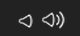
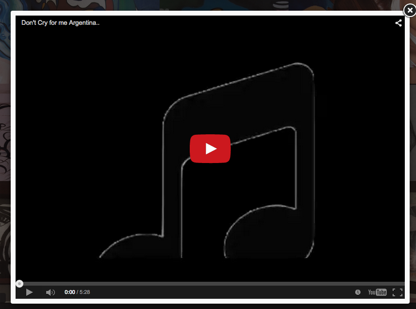
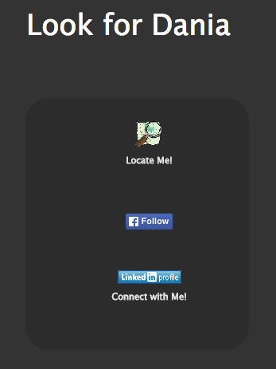

Description and Implementation
This report is an amendment of what has been provided in the previous proposal. While going through details of my mission and vision, I believe I have maintained what I envisioned successfully. Keeping in mind that there are always chances for improvements when time permits.
In this section, I will go through details of the purpose of each area of the website, what I have achieved, what could be better and my next steps. (Please click on each panel for details/hide)
Accomplished
URL: http://cscie12students.dce.harvard.edu/~fkhalil/CSCIE12/Final_Project/FinalProject/home.php My Home Page is simple but very informative and eye catcher. Why?- Navigation: Very simple navigation and clear font at the bottom of the page with a submenu for the gallery that expands upwards
- Easy Access: It’s easy to navigate throughout the pages via a fixed navigation bar that contains the navigation as well as a main title as a hyperlinks that takes the viewer to home page by clicking on it. This way I have accomplished a user friendly and easy to navigate website from one page/section to another. Hence, I can describe my navigation as bidirectional.
- Audio player: Music loads automatically when the page loads, with an audio control pad that is universal and easy to use. This audio tool bar is fixed on all pages. Knowing that there are songs gallery, I have implemented a jquery script that would trigger a “pause” when a user clicks on the song to play from the gallery, and when the user clicks on a regular picture another trigger would fire to play again.
 - News update: Updated news in a carousal form with indicators to access it.
- Theme and Motto: Animation of the boat and the bar at the top of the screen with the music gives the viewer the sense of motion and entertainment.
- I have implemented my website using bootstrap theme and components, with iterations of the design and functionality.
- Personal Information & skills as “Biography”: Her “About” page is clear and concise to avoid any confusion about the function of her website. The well known “about me” is included in the home page in an unconventional way, where a modal pops up by clicking on a “Discover Me” button. This makes the viewer more curious into learning more about Dania.
Accomplished
Dania’s Theme is peace, freedom and courage. The boat moving freely in the ocean presents freedom. The red bar indicates courage and the ocean is a symbol of peace of mind.Accomplished
This will make my website standout in crowded favorites lists in browsers and address bars. I will use a tag to my web page code referencing my .ico logo.I also changed the mouse icon to match the favicon I chose.
Accomplished
URL: http://cscie12students.dce.harvard.edu/~fkhalil/CSCIE12/Final_Project/FinalProject/gallery.phpEach of these sections has a breadcrumb navigation that acts as “Iamhere” for the user.
The three sections are:
URL: http://cscie12students.dce.harvard.edu/~fkhalil/CSCIE12/Final_Project/FinalProject/art.php
URL: http://cscie12students.dce.harvard.edu/~fkhalil/CSCIE12/Final_Project/FinalProject/photo.php
URL: http://cscie12students.dce.harvard.edu/~fkhalil/CSCIE12/Final_Project/FinalProject/song.php
Item #5: Interactive Galleries and appealing slideshows.
- Interactive Gallery
- Transition from one slide to another and the tools to slide images back and forth.
Accomplished
The user can go through the slides using two ways:- By scrolling through them and when he/she hovers over each, the image will enlarge for a clearer view.
- By clicking on one image, and go through the rest of the images by clicking on the sides of the image to either go to the next or the previous one or at the top of the image there is a controller to toggle to the right or left, enlarge the image, close or play slideshow automatically.
- Each user has a unique title floating at the bottom of the image making it perceivable.
- Right click is disabled to not allow viewers from saving the images as a way to protect copy right.
Accomplished
A viewer can like images on Facebook, by simply clicking on the Facebook Like icon in the overlay.I have uploaded Dania’s songs on Youtube, so users/viewers can make use of the share plugin and other already existing functionalities in Youtube.

Songs slides have a unified image to differentiate them. A title will be shown on top of each slide.
Not Accomplished
- Categorize Galleries and enable the user to search for a specific theme - I didn’t find it helpful to add search functionality in the gallery.
- Interaction: Users can add comments on each item in a gallery expressing their opinion - Implementing a Facebook comment plugin requires me to create an APP Id which can be interesting but not necessary at this time. So I will opt out the comment idea and will lean on the fact that the audience can interact with Dania through liking her images and interacting with her from the contact page on social network or through sending her private messages
Accomplished
URL: http://cscie12students.dce.harvard.edu/~fkhalil/CSCIE12/Final_Project/FinalProject/contact.php- Short Contact Form: I used html form tag, php and required fields validator.
- Social media links: Vewers can either look her address up through GoogleMaps, follow her on Facebook, and connect with her on LinkedIn.

Accomplished
I used embedded Google Maps and used JavaScript to call Google API and fancybox to present it in a frame with all required helpers.Accomplished
There are three required fields; Email, Subject and Comment/Message. If the viewer/sender attempts to leave one of those fields blank it will not process the message and will ask the viewer to make sure he/she fills out the fields.Accomplished
After the viewer/sender clicks on the “submit” button to send the message, he/she will get a confirmation as shown below.
Dania will Receive the below email. The sender will be Apache server along with the subject field populated. This way Dania can filter her emails in her inbox easily and have all her fans messages in one folder. The message body will contain the content of the message and the sender’s email.
I have revisited my diagram that I included in my proposal and modified it based on my actual design:
Content (Revised)
The storyboard of my website includes the flow of pages in order as follows:
- Home:
- Photography Gallery
- Title and Theme
- News Update
- Biography
- Gallery:
- Photography Gallery
- All Gallery
- Art Gallery
- Photography Gallery
- Songs Gallery
- Gallery to be divided into three subsections: (each section has the items of the gallery to be downloaded or emailed/shared):
- Contact
- Simple Messaging (email) form
- Social media links
- Google Map location
- Contact details: is a way for her audience to contact Dania using a very simple form to be sent as an email to her, or her social media links can be used along with a phone number.
- Commenting capability where her audience can communicate with her posting their opinions on her work.
Project: list of folders and files
I have also uploaded the deliverables on my github repository at Github
A video presentation can be found on youtube link.
Browser testing:
The "User-Agent" string of the browsers that I’m using and tested my website on are:
- Chrome: Mozilla/5.0 (Macintosh; Intel Mac OS X 10_9_2) AppleWebKit/537.36 (KHTML, like Gecko) Chrome/42.0.2311.135 Safari/537.36
- Safari: Mozilla/5.0 (Macintosh; Intel Mac OS X 10_9_2) AppleWebKit/537.74.9 (KHTML, like Gecko) Version/7.0.2 Safari/537.74.9
- Firefox: Mozilla/5.0 (Macintosh; Intel Mac OS X 10.9; rv:37.0) Gecko/20100101 Firefox/37.0
Error Page (.htaccess):
- Error document response for HTTP response status of 404 (“Not Found”)
- Expiration headers so that CSS, JavaScript, and image (JPEG, GIF, PNG) files are cached for one day.
- HTML/XHTML, CSS, and JavaScript files are compressed in the output filter before they are sent to the web browser.
Markup and CSS Validation (W3C Validator):
I used HTML5 and CSS3 for my website code and validated the Markup and CSS files accordingly. My results are:- home.php: Pass
- home.css
- Error: Sorry, the at-rule @-webkit-keyframes is not implemented
- Why: Prefixes like this one are not within the W3C specification and they are browser specific, so you will always have something like this when running W3C validation. The same goes for any browser specific CSS hacks.
- gallery.php: Pass
- gallery.css: Pass level 3
- art.php: Pass
- photo.php: Pass
- song.php: Pass
- contact.php: Pass
- contact.css: Pass level 3
Lessons Learned
I’m very excited as I’ve always wanted to be able to design and create websites. Taking this course and going through all the assignments we’ve been working was very helpful. Now, with this project I have learned a lot. Everything works well to an extent, and I have realized that there is always window for improvement as long as we have the backbone and structure of what we need to accomplish. Several functionalities that I have implemented can be done in different ways and many more that still needs to be added. In this section I will be sharing with you my thoughts.
The items that I’m pleased with are:
- The home page conveys the purpose and vision of the website clearly, and interacts well with the user.
- The flexibility in turning the automatic background audio off and on is very handy.
- Easy to maintain due to PHP structure that I built, where the admin can easily add/remove media files, and change fancybox presentation.
- Easy navigation through slides in the Gallery.
- Easy to figure out where the viewer is within the website through the breadcrumb added to each page.
- Reaching out to Dania is very friendly and easy.
The items that I’m pleased with are:
- The display of the gallery (photos, artwork and songs) can be done differently, making it faster to load.
- I used CSS only for the grow feature (Zooming) of images when hover over media items. Maybe with further tweaking with CSS, a border can be defined so as not to have a visible overlapping of images for the last item in every gallery page. Also if javascript was used it might be smoother.
- The contact details (locate me, connect with me on Linkedin and Facebook) can be illustrated in a more attractive way.
- Controlling the audio player was done by using javascript. Currently if a user clicks on regular images the music keeps playing. But when the user clicks on a song, the player will pause which is the desired outcome. However, when the user closes the youtube/song layout, the player is expected to play again, but now it doesn’t as I couldn’t find the javascript Event Method referring to “close”.
If I was given the chance to approach this project again, I might end up doing the same design structure. Might go different with theme colors though. What helped me in this enjoying experience is adopting the indentation and commenting practice since the very beginning when I started writing the code. So I will definitely stick to this approach as I recognized how important it is as I progressed and things got more complicated.
Future Directions
This is my first real experience in implementing a website using HTML, JavaScript and CSS, as well as some PHP. I have learned a lot from this experience and from my own perspective, I believe what I have accomplished so far is a great step towards a stable website for my sister Dania.
I kind of accomplished my vision for this project. As I have mentioned in my proposal, continuous improvement is necessary to make Dania’s website more effective in serving it’s function. Several features can be added in the near future which would enhance the interaction between Dania and her viewers. Some of these features are:
- To create a Blog for the gallery to enable more related interaction on the gallery and on each item of the gallery.
- Purchasing Cart so Dania can initiate a real business. This will include viewers choosing one or many items of the gallery and place it in the cart. That would also require a user database that holds login details.
- Improve the speed in loading media, noting that I compressed the images but I have notices some slowness in loading.
I believe I have met the requirements for a presentable, user friendly, and informative website. Thank you for this very informative, beneficial and enjoyable course!